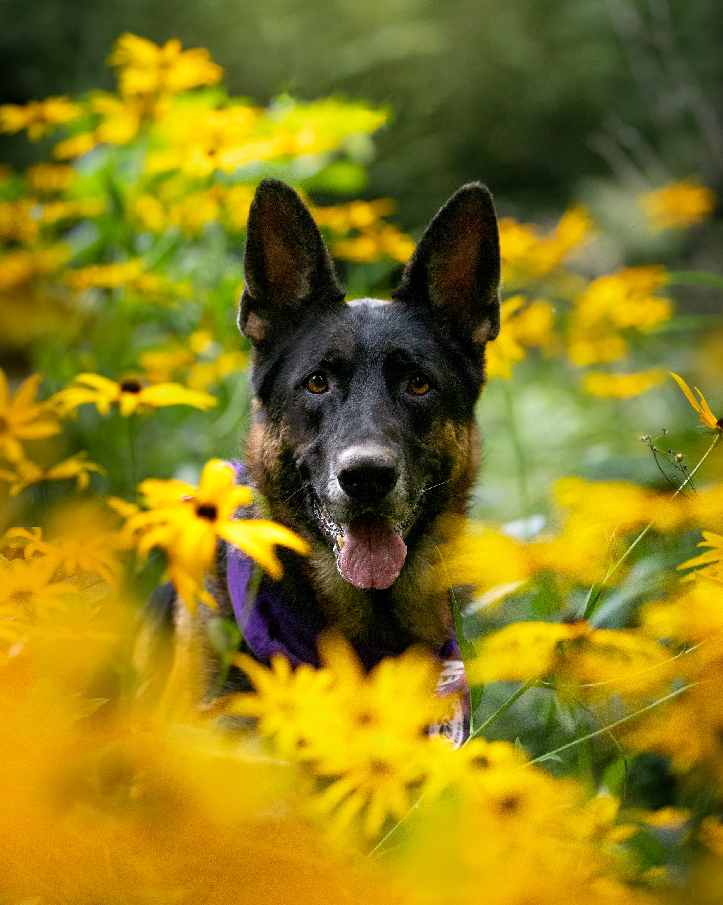
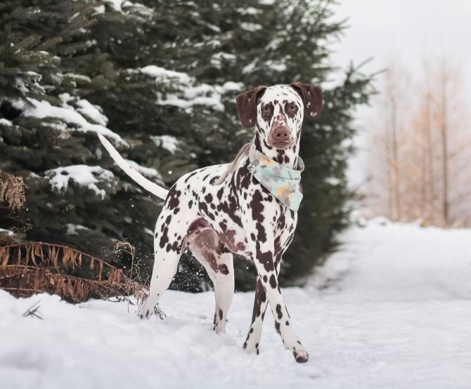
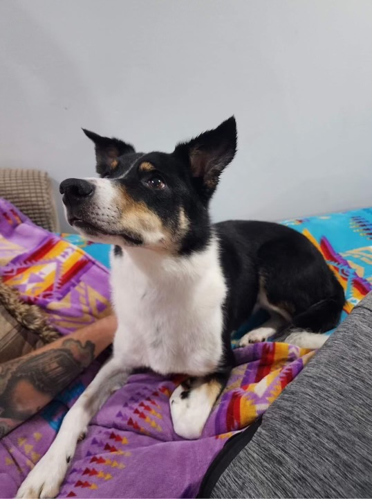

Link 2
RAIVEN
Raiven was born on February 3rd 2017. She is a purebred German Shepherd and is my soul dog. She is one smart cookie and has been trained many different behaviours and tricks along with service dog tasks. I have a form of PTSD and a medical issue which requires daily medications and one of Raiven’s most impressive tasks is being able to retrieve my medications when she hears my daily alarm. Raiven is also titled in dock diving and freestyle obedience. She also loves to do agility and heelwork. She loves to play with her ball and dig holes at the beach! She can one big goof at times but also knows when to be serious. Raiven helps teach all of our clients proper social skills and is an excellent role model when assisting with obedience tasks.
Check out Raiven in action here!
Link 1Link 2

Stark was born on May 18th 2019. He is a purebred Liver Spotted Dalmatian. The one question I get asked
a lot is ‘is that a Dalmatian? Why does he have brown spots?’ Dalmatians can be born with either black or
brown spots. What makes the brown spots more rare is that the females can only carry the liver gene. If
the female does not carry the liver gene, all puppies will be born black and white. So yes although rare,
Dalmatians do come with chocolate sprinkles! Stark is a very energetic boy! He loves to play tug and
learn new tricks. Stark is also an excellent dock diver and is titled in both diving and freestyle obedience.
Stark is always down for a cuddle and you can find him always by my side or chewing on his favorite
bone! Stark helps teach all of our clients social skills and proper play techniques. He is also a fantastic
demo dog during our private lessons to assist with distraction training. Stark was also cast in a tv show as
an extra!

Balto was born on August 3rd 2021. He is a purebred Working Line German Shepherd. Balto is an
absolute sweetheart. He is always looking for affection and will snuggle up at my feet during a movie.
Balto is also obsessed with his ball! He will do absolutely anything if it means you will throw his ball!
Being a working line shepherd, Balto is also quite intense at times. Working lines are not for your average
dog owner. Balto is very high drive and do not try to mess with him! He is a tough man but also highly
obedient. He is quick to perform tasks and picks up on new tricks or obedience commands after only a
few repetitions. Balto is also training in the sport of IGP or Schutzhund. This is a sport to test a dogs
obedience, tracking and protection skills. Balto is titled in dock diving and freestyle and working towards
his IGP titles. Balto was also cast in a tv show and he will have his episode aired on tv soon!
STARK
Stark was born on May 18th 2019. He is a purebred Liver Spotted Dalmatian. The one question I get asked
a lot is ‘is that a Dalmatian? Why does he have brown spots?’ Dalmatians can be born with either black or
brown spots. What makes the brown spots more rare is that the females can only carry the liver gene. If
the female does not carry the liver gene, all puppies will be born black and white. So yes although rare,
Dalmatians do come with chocolate sprinkles! Stark is a very energetic boy! He loves to play tug and
learn new tricks. Stark is also an excellent dock diver and is titled in both diving and freestyle obedience.
Stark is always down for a cuddle and you can find him always by my side or chewing on his favorite
bone! Stark helps teach all of our clients social skills and proper play techniques. He is also a fantastic
demo dog during our private lessons to assist with distraction training. Stark was also cast in a tv show as
an extra! Check out Stark in action here!
Link 1
Link 2
BALTO
Balto was born on August 3rd 2021. He is a purebred Working Line German Shepherd. Balto is an
absolute sweetheart. He is always looking for affection and will snuggle up at my feet during a movie.
Balto is also obsessed with his ball! He will do absolutely anything if it means you will throw his ball!
Being a working line shepherd, Balto is also quite intense at times. Working lines are not for your average
dog owner. Balto is very high drive and do not try to mess with him! He is a tough man but also highly
obedient. He is quick to perform tasks and picks up on new tricks or obedience commands after only a
few repetitions. Balto is also training in the sport of IGP or Schutzhund. This is a sport to test a dogs
obedience, tracking and protection skills. Balto is titled in dock diving and freestyle and working towards
his IGP titles. Balto was also cast in a tv show and he will have his episode aired on tv soon! Check out
Balto in action here!
Link 1
Link 2
Link 3

Leah was born in October of 2016. She is a purebred Border Collie and joined our pack when I married my
husband Jordan Pawlaczek! Leah is an absolute gem. Although tiny she is very mighty! She loves everyone
she meets and is always ready to play fetch! She is also an amazing tug opponent. Leah is also your typical
Border Collie and loves to run circles in the yard or cheer on the other dogs during playtime. She loves going
for truck rides and will sneak past you if you are not looking when you grab the keys! I am coming too she
says! Leah is great on her leash and learned very quickly how to live ‘the pack life.’ She loves her off leash
adventures, chasing bubbles and getting to let loose and have fun!